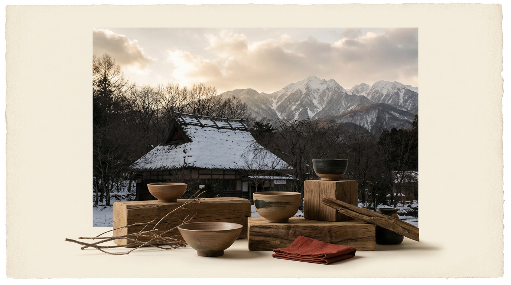
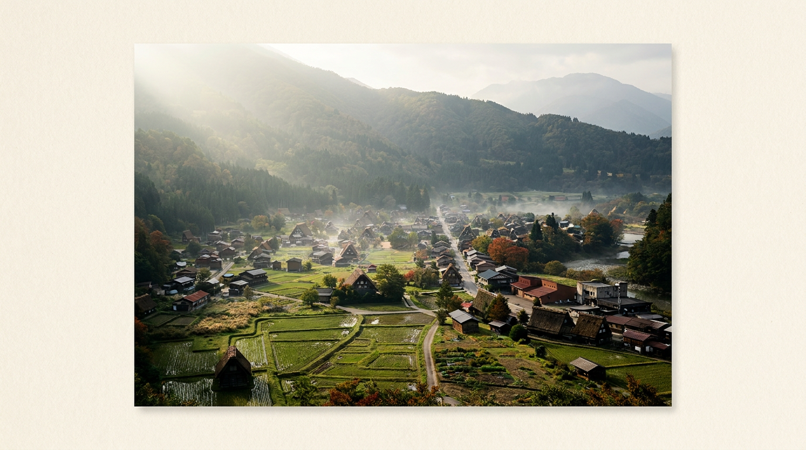
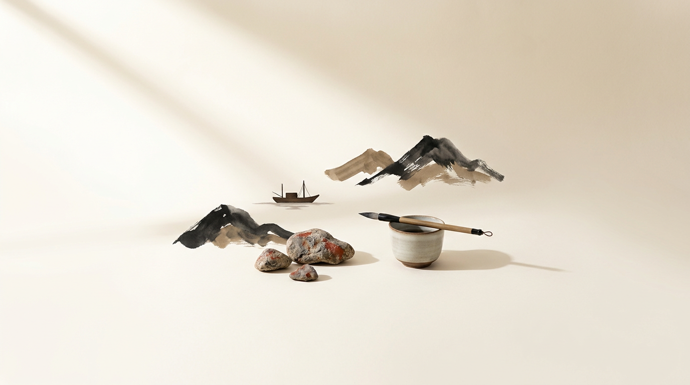
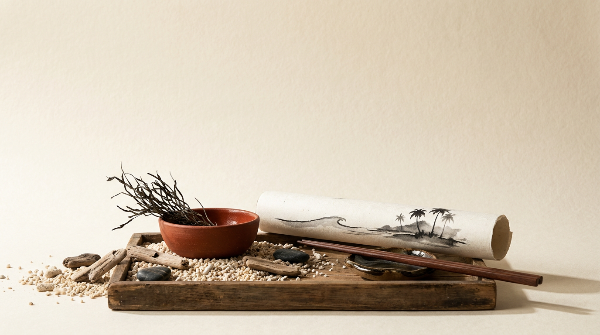

SAKETTO
AXIS 03 — REGION
— BY REGION
地域から、探す。
クラフトサケは復興と再生の文脈と深く結びついている。福島・宮城・岩手といった東北、首都圏の都市型、関西の団地酒蔵、九州・沖縄の南国素材まで、25蔵が日本列島に散らばる。

No. 01
稲とアガベ醸造所
アガベシロップを副原料に使う代表格。クラフトサケジャンル創設者格。
No. 02
haccoba
クラフトサケジャンルの先駆者。「花酛」復刻＋ホップ・ハーブ・ベルギービール製法・バーボンバレル熟成も実験。
No. 03
平六醸造
古民家（平井邸）を改装した醸造所。発芽玄米ベースのRe:viveと、フルーツ果汁を重ねるlayerの2シリーズ展開。
No. 04
ぷくぷく醸造
全量酵母無添加×ビール技法のハイブリッド。元haccoba醸造責任者の立川氏が独立。木桶仕込みの全麹酒も展開。
No. 05
nondo（non°）
自然栽培「遠野1号」米。四代目佐々木要太郎が長年取り組む遠野のクラフトサケ。
No. 06
Fermenteria
「その他の醸造酒製造免許」取得（2024年7月）。果実等副原料も小ロット製造可能。運営は勝花藏株式会社。

No. 01
木花之醸造所
浅草・駒形のどぶろく醸造所。ALL (W)RIGHT sake placeを併設しバーで提供。若手醸造家の修行拠点的役割。
No. 02
やまね酒造
副原料に狭山茶・発芽玄米。クラフトサケ醸造は2022年から本格化。
No. 03
平和どぶろく兜町醸造所
副原料にホップ・果実・豆類・穀類・ハーブ（ミント・レモングラス・スイートバジル等）多彩。
No. 04
東京駅酒造場
運営はせがわ酒店。マンゴー・リンゴ・みかん・パイン・桃・ぶどう・ハニーレモンなど多彩なフルーツどぶろく。
No. 05
鮭酒造
生酛造り＋副原料の組合せで独自の路線。日経新聞・Sake Worldで「クラフトサケ」と明記。
No. 06
土浦醸造
2026年春開業予定。茨城産米を主原料に。


No. 01
ハッピー太郎醸造所
糀屋（発酵食品店）×どぶろくのハイブリッド。「something happy」シリーズで茶葉・八朔・黒文字など多彩な副原料を展開。
No. 02
足立農醸
日本初の「団地酒蔵」。最小規模の酒蔵でカフェ＆バー併設。クラフトサケ＋発酵ノンアル飲料の二軸展開。
No. 03
平和どぶろく難波醸造所
桜・抹茶・柚子など季節の副原料を駆使したどぶろくを提供。
No. 04
LINNÉ
haccoba・阿部酒造・LIBROMで委託醸造のファントムブリュワリー。2026年京都自社醸造所開設予定。
No. 05
HAKUTSURU SAKE CRAFT
No.4はホップ使用（米以外）、ロゼ色。各回非再現の一期一会型。


— 拡張予定
北海道 / 中国 / 四国 は現時点で新興クラフトサケ醸造所の確認が取れていません。Phase 2 で発掘予定。
北海道 / 中国 / 四国 は現時点で新興クラフトサケ醸造所の確認が取れていません。Phase 2 で発掘予定。